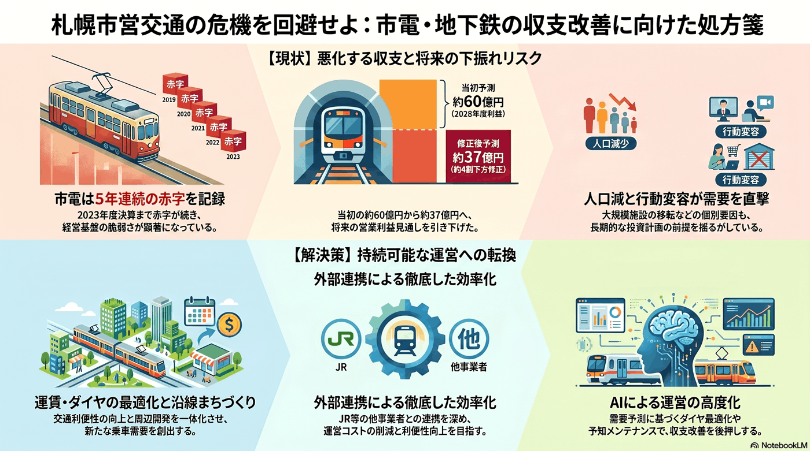

交通・公共交通
5年以内
市電・地下鉄の収支悪化リスク
市電は赤字が続き、黒字の地下鉄も将来見通しが下振れしている。

背景
公営交通の収支は利用者数に直結する。人口減・行動変容に加え、大型施設の移転など個別要因も乗客動向を左右し、長期の投資計画の前提を揺るがす。
主要データ
| 市電の収支 | 5年連続赤字（2023年度決算まで） |
|---|---|
| 地下鉄2028年度営業利益見通し | 約60億円→約37億円に下方修正 |
事実
- 市電（路面電車）は2023年度決算まで5年連続の赤字となっている。
- 地下鉄は2023年度決算で黒字だが、2028年度の営業利益見通しは約60億円から約37億円へ下方修正された。
解釈
公営交通の収支悪化は、運賃・サービス水準・将来投資のすべてに影響する。需要創出と効率化の両輪が必要になる。
提案
- 運賃・ダイヤの最適化と沿線まちづくりによる需要創出。
- 他事業者（JR等）との連携による効率化。
検討体制・メンバー
札幌市交通局が経営を担う。検討会には交通経済・経営の専門家、財政部局、沿線のまちづくり担当・商業者、利用者代表を加え、運賃やダイヤと沿線開発を一体で需要創出につなげる視点が要る。
AIノート
AIの貢献度は中。乗降データの分析による需要予測、ダイヤ・運賃の最適化、設備保全の予知メンテナンスで収支改善を後押しできる。需要そのものは人口とまちづくりに左右されるため、AIは運営効率化が主な役割。